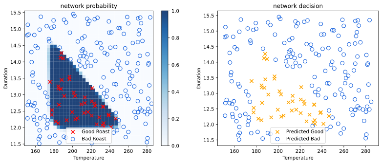

import numpy as np
def sigmoid(z):
return 1 / (1 + np.exp(-z))
x = np.array([200, 17])Neural Networks in NumPy
machine-learning
neural-networks
Forward propagation from scratch in NumPy, first hardcoded neuron by neuron, then generalized into a single reusable dense layer function.
Why Implement Forward Propagation Yourself
So far, TensorFlow built and trained the coffee roasting network for you. This page does the same forward propagation by hand, using nothing but plain NumPy, so you can see exactly what a library like TensorFlow or PyTorch is doing underneath.
This is not something most people need to do in practice. Almost everyone building neural networks today uses an existing library rather than writing forward propagation themselves. But someday, someone may need to build a better framework than the ones that exist today, and that person will need exactly this kind of understanding. More immediately, seeing the raw computation makes the library code far less mysterious.
There is a fair amount of code on this page. You do not need to memorize any of it. The goal is just to be able to read through it and understand what each line is doing, so that the same code in a lab feels familiar rather than intimidating.
Review Questions
1. Why does this page implement forward propagation by hand instead of just using TensorFlow?
TipAnswer
To build a clear understanding of what a library like TensorFlow is actually computing underneath, not because it is the normal way to build networks in practice.
Coffee Roasting Model in NumPy
The running example is the same coffee roasting network from the previous page, 2 input features, a first hidden layer with 3 units, and an output layer with 1 unit. The task is to take an input feature vector \(\vec{x}\) and compute the final output \(a^{[2]}\) by hand.
Notice the single square bracket. Earlier, TensorFlow code represented \(\vec{x}\) as a 2D matrix, np.array([[200.0, 17.0]]). Here, everything is a plain 1D array, matching the Course 1 convention rather than TensorFlow’s own. Since this code calls NumPy functions directly rather than passing data into a Dense layer, there is no need for the 2D matrix shape TensorFlow expects internally.
Review Questions
1. Why is x written with a single square bracket here, instead of the double brackets used for TensorFlow?
TipAnswer
This code calls NumPy directly rather than passing data into a TensorFlow Dense layer, so there is no need for TensorFlow’s 2D matrix convention. A plain 1D array is enough.
Computing the Second Layer by Hand
Layer 2 has just 1 unit, so it needs only one computation, but it follows the identical pattern. This time the input is \(\vec{a}^{[1]}\), the output of layer 1, not the original \(\vec{x}\).
w2_1 = np.array([-7, 8, 9])
b2_1 = np.array([3])
z2_1 = np.dot(w2_1, a1) + b2_1
a2_1 = sigmoid(z2_1)
print(a2_1)[0.99330715]That is forward propagation for the whole coffee roasting network, computed using nothing but np.dot and a hand-written sigmoid function. Every step here matches exactly what layer_1(x) and layer_2(a1) were doing inside TensorFlow, just written out explicitly instead of hidden inside a library call.
Review Questions
1. What is the input to layer 2’s computation, \(\vec{x}\) or \(\vec{a}^{[1]}\)?
TipAnswer
\(\vec{a}^{[1]}\), the output of layer 1. Layer 2 never sees the original input directly.
1. Why is b2_1 written as np.array([3]) instead of the plain number 3?
TipAnswer
To keep every parameter, weights and biases alike, as an array, the same consistent pattern used for every unit in layer 1.
What Comes Next
This code works, but it hardcodes a separate block of code for every single neuron, a1_1, a1_2, a1_3, a2_1, each with its own weight and bias variables written out by hand. That becomes unmanageable fast for a network with 25 or 100 units in a layer. The next step is to replace this neuron-by-neuron code with a single reusable function that works for a layer of any size.
Review Questions
1. What is the main limitation of the code written on this page?
TipAnswer
It hardcodes a separate block of code for every neuron, which does not scale to layers with many units.
Stacking Weights Into a Matrix
Layer 1’s three units each had their own weight vector: \(\vec{w}_1^{[1]} = \begin{bmatrix} 1 & 2 \end{bmatrix}\), \(\vec{w}_2^{[1]} = \begin{bmatrix} -3 & 4 \end{bmatrix}\), \(\vec{w}_3^{[1]} = \begin{bmatrix} 5 & -6 \end{bmatrix}\). Instead of keeping these three separate, stack them together as the columns of one matrix.
\[ W^{[1]} = \begin{bmatrix} 1 & -3 & 5 \\ 2 & 4 & -6 \end{bmatrix} \]
The first column is \(\vec{w}_1^{[1]}\), the second column is \(\vec{w}_2^{[1]}\), the third column is \(\vec{w}_3^{[1]}\). With 2 input features and 3 units, \(W^{[1]}\) is a 2 by 3 matrix. The biases stack together too, but as a plain 1D array rather than a matrix, since there is only ever one bias per unit.
W1 = np.array([[1, -3, 5],
[2, 4, -6]])
b1 = np.array([-1, 1, 2])
print(W1.shape)(2, 3)Notice the capital letter \(W\). By the usual linear algebra convention, an uppercase letter denotes a matrix, while a lowercase letter (like \(w\), \(b\), \(x\), \(a\)) denotes a vector or a scalar. That is why the stacked weights get a capital \(W\), while everything else on this page stays lowercase.
Review Questions
1. In \(W^{[1]}\), what does each column represent?
TipAnswer
One unit’s weight vector. The first column is \(\vec{w}_1^{[1]}\), the second is \(\vec{w}_2^{[1]}\), and so on.
1. Why is the weight matrix written with a capital \(W\), while the bias stays lowercase \(b\)?
TipAnswer
By linear algebra convention, capital letters denote matrices, and lowercase letters denote vectors or scalars. \(W\) is a matrix (weights from every unit stacked together), while \(b\) remains a plain 1D array.
1. When coding up the NumPy array \(W\), where do the weight parameters for each neuron go?
(A) In the columns of \(W\)
(B) In the rows of \(W\)
TipAnswer
(A), the columns. Each unit’s weight vector fills one column, which is exactly why units = W.shape[1] (the number of columns) gives the number of units in the layer.
Reusable Dense Layer Function
With the weights stacked into \(W\) and the biases stacked into \(b\), write one function, dense, that computes an entire layer’s activations at once. It takes the previous layer’s activation vector along with that layer’s \(W\) and \(b\), and returns the new activation vector, no matter how many units the layer has.
def dense(a_in, W, b):
units = W.shape[1]
a_out = np.zeros(units)
for j in range(units):
w = W[:, j]
z = np.dot(w, a_in) + b[j]
a_out[j] = sigmoid(z)
return a_outWalking through each line: units = W.shape[1] reads off the number of columns in \(W\), which is exactly the number of units in this layer. a_out = np.zeros(units) creates an empty array to fill in, 3 zeros for a 3-unit layer. The for loop then runs once per unit. Each time through, w = W[:, j] pulls out column \(j\), the weight vector for unit \(j\). The rest of the loop body is the same two-step computation you already know, \(z = \vec{w} \cdot \vec{a}_{\text{in}} + b_j\), then \(a_j = g(z)\), stored directly into a_out[j].
Note
sigmoid (often written \(g\)) is defined outside dense, as its own separate function, not written out again inside it. dense just calls sigmoid, the same way it calls np.dot.
To see exactly what happens inside dense, run the same steps by hand, one at a time, and print the result after each one.
units = W1.shape[1]
print("units =", units)
a_out_trace = np.zeros(units)
print("a_out starts as", a_out_trace)
for j in range(units):
w = W1[:, j]
z = np.dot(w, x) + b1[j]
a_out_trace[j] = sigmoid(z)
print(f"after j={j}, a_out =", a_out_trace)units = 3
a_out starts as [0. 0. 0.]
after j=0, a_out = [1. 0. 0.]
after j=1, a_out = [1.00000000e+000 2.45261912e-231 0.00000000e+000]
after j=2, a_out = [1.00000000e+000 2.45261912e-231 1.00000000e+000]a_out starts as 3 zeros, [0. 0. 0.], before the loop runs at all. The loop then runs for j = 0, j = 1, j = 2 in turn, filling in exactly one slot of a_out each time through. By the time the loop finishes, all 3 slots hold real activation values, matching what dense itself returns.
Review Questions
1. What does W.shape[1] give you, and why does the function use it to set units?
TipAnswer
The number of columns in \(W\), which equals the number of units in the layer, since each unit’s weights fill one column.
1. Inside the loop, what does W[:, j] pull out?
TipAnswer
Column \(j\) of \(W\), the weight vector belonging to unit \(j\).
1. Before the loop runs, what does a_out hold, and why does it start that way?
TipAnswer
[0. 0. 0.], 3 zeros. np.zeros(units) creates a placeholder array of the right size, so the loop has somewhere to write each unit’s activation as it goes.
1. If \(W\) has 2 rows and 3 columns, how many times does dense’s for loop run?
(A) 2 times
(B) 3 times
(C) 5 times
(D) 6 times
TipAnswer
(B), 3 times. units = W.shape[1] reads off the number of columns, 3, and the loop runs once per unit, regardless of how many rows (features) \(W\) has.
Testing Dense on Layer 1
Call dense with the original input \(\vec{x}\) and layer 1’s stacked parameters, and compare the result to the hand-computed a1 from earlier on this page.
a1 = dense(x, W1, b1)
print(a1)
print(a1.shape)[1.00000000e+000 2.45261912e-231 1.00000000e+000]
(3,)The three numbers match the earlier per-neuron computation exactly. This time, though, a1 comes out as a clean \((3,)\) shape rather than \((3, 1)\), since dense fills in plain numbers rather than 1-element arrays.
Layer 2 works the same way. It has only 1 unit, so \(W^{[2]}\) has only 1 column, built from \(\vec{w}_1^{[2]} = \begin{bmatrix} -7 & 8 & 9 \end{bmatrix}\).
W2 = np.array([[-7],
[8],
[9]])
b2 = np.array([3])
a2 = dense(a1, W2, b2)
print(a2)[0.99330715]The same dense function, unchanged, correctly handles a layer of any size, 3 units or 1.
dense takes a parameter named a_in, not x, on purpose. That input could be the network’s original features, \(\vec{a}^{[0]} = \vec{x}\), or it could be some later layer’s activation, dense does not care which. To make that concrete, call dense again with a completely different input, unrelated to the coffee example, using the same layer 1 parameters.
a_in = np.array([-2, 4])
print(dense(a_in, W1, b1))[9.93307149e-01 1.00000000e+00 1.26641655e-14]Different input, same W1 and b1, and dense runs the identical computation, no changes needed.
Review Questions
1. Why does calling dense(x, W1, b1) give the same numbers as the hand-written a1_1, a1_2, a1_3 from earlier on this page?
TipAnswer
dense performs exactly the same computation, \(z = \vec{w} \cdot \vec{x} + b\) then sigmoid, for each unit. It just does it in a loop instead of writing the code out three separate times.
1. Why is dense’s first parameter named a_in rather than x?
TipAnswer
Because it is not always the original input. It could be \(\vec{x}\) for the first layer, or the previous layer’s activation for any later layer. dense works the same way either way.
Chaining Dense Layers
With dense in hand, running forward propagation through a whole network is just calling it once per layer, feeding each layer’s output into the next.
\[ \vec{a}^{[1]} = \text{dense}(\vec{x}, W^{[1]}, \vec{b}^{[1]}) \]
\[ \vec{a}^{[2]} = \text{dense}(\vec{a}^{[1]}, W^{[2]}, \vec{b}^{[2]}) \]
For a deeper network, the same pattern just continues, \(\vec{a}^{[3]} = \text{dense}(\vec{a}^{[2]}, W^{[3]}, \vec{b}^{[3]})\), and so on, however many layers there are. Wrapping that pattern in one function, sequential, for a network with 4 layers looks like this.
def sequential(x):
a1 = dense(x, W1, b1)
a2 = dense(a1, W2, b2)
a3 = dense(a2, W3, b3)
a4 = dense(a3, W4, b4)
f_x = a4
return f_xEach line feeds the previous line’s output into the next call to dense. The last layer’s output, a4, is the network’s final prediction, \(f(\vec{x})\). There is no W3, b3, W4, or b4 defined anywhere on this page, since the coffee roasting network only has 2 layers, so this exact code will not run here. It is shown purely as the general pattern, to see how it extends to a deeper network.
For the coffee roasting network, which really does have only 2 layers, the same pattern is 2 lines, and this version does run.
def sequential(x):
a1 = dense(x, W1, b1)
a2 = dense(a1, W2, b2)
return a2
f_x = sequential(x)
print(f_x)[0.99330715]Review Questions
1. For a network with 4 layers, what does \(f(\vec{x})\) equal?
TipAnswer
\(\vec{a}^{[4]}\), the output of the last layer.
1. What has to change in dense itself to handle a network with more layers?
TipAnswer
Nothing. The same dense function is simply called once per layer, with that layer’s own \(W\) and \(b\).
1. Why does the 4-layer sequential code shown above not actually run on this page?
TipAnswer
It references W3, b3, W4, and b4, which are never defined here, since the coffee roasting network only has 2 layers. It is shown only to illustrate the general pattern.
Why Understanding the Code Underneath Matters
Even when using a powerful library like TensorFlow day to day, understanding what happens underneath is genuinely useful. When something goes wrong, runs unexpectedly slowly, or produces a strange result, the ability to reason about what the library is actually computing makes debugging far more effective. Machine learning code frequently does not work on the first try, and knowing what forward propagation looks like without any library at all is part of what makes debugging it possible.
Review Questions
1. According to this page, why is understanding forward propagation from scratch useful, even if you will normally use TensorFlow?
TipAnswer
It makes debugging far more effective. Understanding what the library is actually computing helps you reason about unexpected results, slow runs, or bugs.
Lab: Coffee Roasting in NumPy
This lab builds the entire coffee roasting network again, same dataset, same architecture, but this time using nothing but the dense function already defined earlier on this page. No Dense layer, no Sequential, no model.fit, just plain NumPy.
Dataset
Reuse the exact same coffee roasting dataset from the TensorFlow lab.
data = np.loadtxt("../../media/coffee-roasting.txt", delimiter=",")
X = data[:, :2]
Y = data[:, 2:3]
print(X.shape, Y.shape)(200, 2) (200, 1)Normalize the Data
Training a network from scratch is not covered until a later page, so this lab skips straight to using already-trained weights. Normalization is still needed, since those weights were trained on normalized data.
import tensorflow as tf
import matplotlib.pyplot as plt
import logging
logging.getLogger("tensorflow").setLevel(logging.ERROR)
norm_l = tf.keras.layers.Normalization(axis=-1)
norm_l.adapt(X)
Xn = norm_l(X).numpy()TensorFlow’s Normalization layer is the only piece of TensorFlow used anywhere in this lab. Every actual computation of the network itself runs through the dense function defined earlier on this page.
Trained Weights
These weights come from a training run saved specifically for this lab. They are close to, but not exactly, the values from the earlier TensorFlow lab, since that was a separate training run.
W1 = np.array([[-8.93, 0.29, 12.9],
[-0.1, -7.32, 10.81]])
b1 = np.array([-9.82, -9.28, 0.96])
W2 = np.array([[-31.18],
[-27.59],
[-32.56]])
b2 = np.array([15.41])NumPy-Only Sequential Model
Stack two calls to dense to build the whole network, exactly the same pattern used earlier on this page.
def sequential(x, W1, b1, W2, b2):
a1 = dense(x, W1, b1)
a2 = dense(a1, W2, b2)
return a2Predicting on Many Examples at Once
dense, and therefore sequential, only handles one training example at a time, since it expects a plain 1D input vector. The dataset has 200 examples, so predicting on all of them means looping over the rows of X one at a time, calling sequential once per row.
def predict(X, W1, b1, W2, b2):
m = X.shape[0]
p = np.zeros((m, 1))
for i in range(m):
p[i, 0] = sequential(X[i], W1, b1, W2, b2)[0]
return psequential returns a 1-element array, not a plain number, since it is really just dense’s output for the final layer. [0] pulls the single number back out so it can be stored directly in p[i, 0]. This is a real gap between a hand-written NumPy model and a library like TensorFlow, whose model.predict accepts a whole matrix directly. Here, that batching has to be written by hand.
Review Questions
1. Why does predict need a for loop, when sequential already exists?
TipAnswer
sequential (and dense underneath it) only handles one example at a time. Predicting on all 200 rows of X means calling sequential once per row.
1. What is the only part of this lab that still uses TensorFlow?
TipAnswer
tf.keras.layers.Normalization, used purely to scale the input features. The network itself runs entirely through the hand-written dense function.
Testing on Two Examples
Test the same two settings used in the TensorFlow lab, 200 degrees for 13.9 minutes, and 200 degrees for 17 minutes.
X_tst = np.array([
[200, 13.9], # expected: good roast
[200, 17]]) # expected: bad roast (too long)
X_tstn = norm_l(X_tst).numpy()
predictions = predict(X_tstn, W1, b1, W2, b2)
print(predictions)[[9.71931351e-01]
[3.28978710e-08]]yhat = (predictions >= 0.5).astype(int)
print(yhat)[[1]
[0]]Same as the TensorFlow lab, the network predicts a good roast for the first setting and a bad roast for the second.
Visualizing the Whole Network
Run the same probability and decision visualization from the TensorFlow lab, this time driven entirely by the hand-written predict function.

This matches the TensorFlow lab’s result closely, the same triangular good-roast region, produced this time entirely by hand-written NumPy code.
Summary
In this lab you learned:
- The
densefunction defined earlier on this page is enough, on its own, to build and run a real trained neural network, no TensorFlow layers required. - A hand-written model like this only predicts one example at a time, so predicting on a full dataset means writing the batching loop yourself, something TensorFlow’s
model.predicthandles automatically. - TensorFlow can still be useful as a utility, like its
Normalizationlayer, even inside a model that is otherwise built entirely from scratch.
Review Questions
1. What does this lab demonstrate that the earlier TensorFlow lab could not?
TipAnswer
That the same coffee roasting network, using the same trained weights, can be run entirely with hand-written NumPy code, without any TensorFlow layers, and produce matching predictions.
1. If you had 1,000 new examples to predict on, what would need to change in this lab’s code?
TipAnswer
Nothing. predict already loops over however many rows are in X, one call to sequential per row.